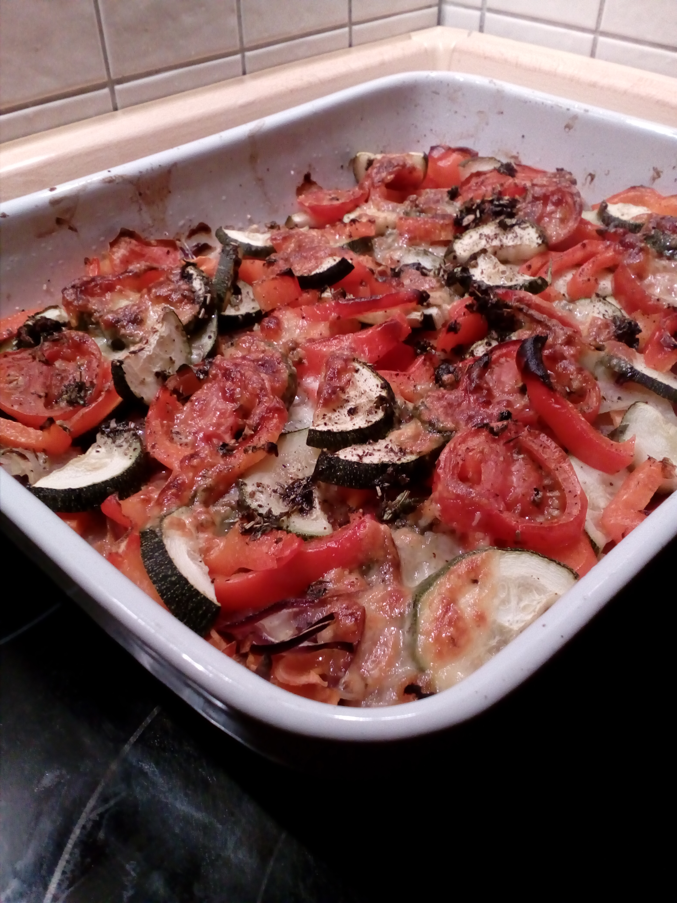

Zutaten für 3 Portionen
- 2 mittelgroße Möhren
- 1 große Zwiebel
- 1 Kohlrabi
- 1 rote Paprikaschote
- 2 Tomaten
- 1 Zucchini
- 1 Knoblauchzehe
- ein Bund Basilikum oder 2 EL getrockneter Basilikum
- 5 EL Öl, z.B. Rapsöl
- 2 Mozzarella
- etwas Fett für die Auflaufform
- Salz & Pfeffer
Zubereitung
Die Möhren, den Kohlrabi und die Zwiebel schälen. Die Möhren und den Kohlrabi in sehr feine Scheiben hobeln, die Zwiebel halbieren und der Länge nach in Streifen schneiden. Möhren, Kohlrabi und Zwiebel in eine Schüssel geben, gut vermengen und vorerst zur Seite stellen.
Nun die Paprikaschote, die Tomaten und die Zucchini waschen. Paprika vierteln, dann die Viertel quer in ca. 0,5 cm breite Streifen schneiden. Tomaten und Zucchini in ca. 0,5 cm breite Scheiben schneiden und auch erst mal zur Seite stellen.
Das Öl in ein Glas oder eine Tasse geben, die Knoblauchzehe schälen und durch eine Knoblauchpresse in das Öl geben. Den Basilikum fein hacken, ebenfalls untermischen.
Eine Auflaufform gut einfetten und den Backofen auf 225°C vorheizen.
 Nun das vorbereitete Gemüse in die Auflaufform geben. Den Boden mit der Mischung aus Möhren, Kohlrabi und Zwiebeln bedecken, kräftig mit Salz und frisch gemahlenem Pfeffer würzen und mit etwas Basilikum-Knoblauch-Öl beträufeln.
Nun das vorbereitete Gemüse in die Auflaufform geben. Den Boden mit der Mischung aus Möhren, Kohlrabi und Zwiebeln bedecken, kräftig mit Salz und frisch gemahlenem Pfeffer würzen und mit etwas Basilikum-Knoblauch-Öl beträufeln.
 Dann Paprika, Zucchini und Tomaten gleichmäßig darüber verteilen, noch mal mit Pfeffer würzen und mit dem restlichen Basilikum-Knoblauch-Öl beträufeln.
Dann Paprika, Zucchini und Tomaten gleichmäßig darüber verteilen, noch mal mit Pfeffer würzen und mit dem restlichen Basilikum-Knoblauch-Öl beträufeln.
Zum Schluss den in Scheiben geschnittenen Mozzarella auf dem Auflauf verteilen und alles für 30-35 Minuten auf der mittleren Schiene backen. 